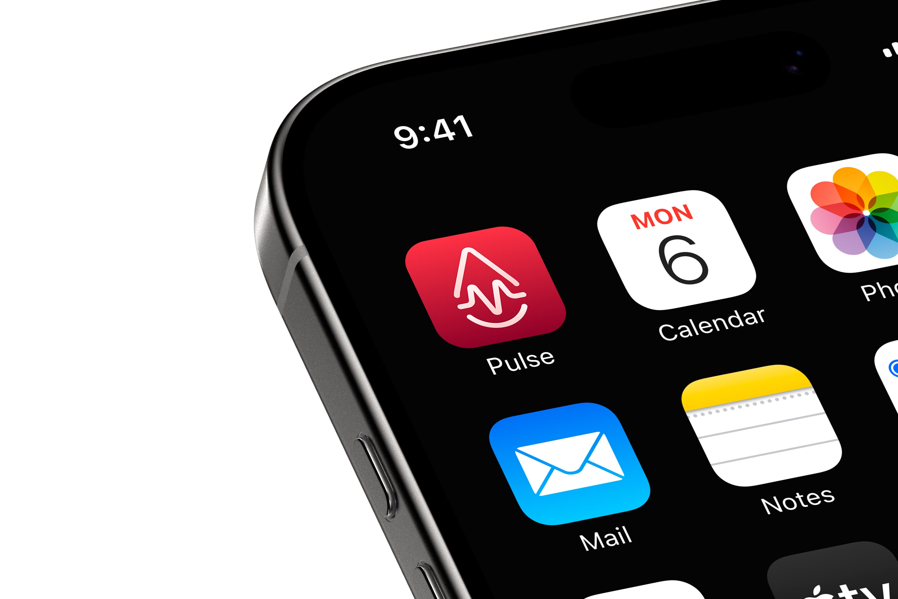
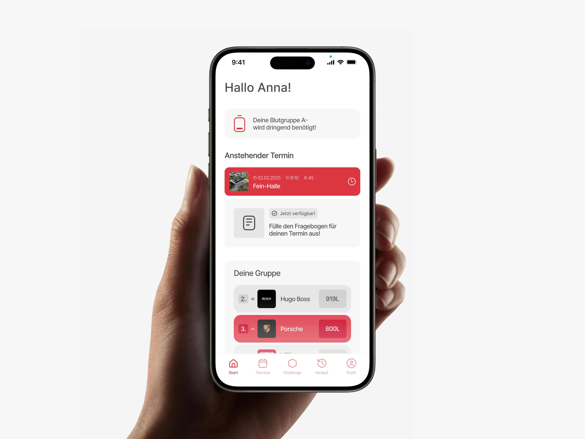
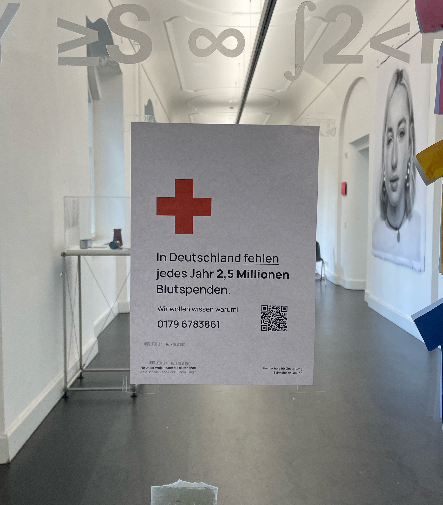
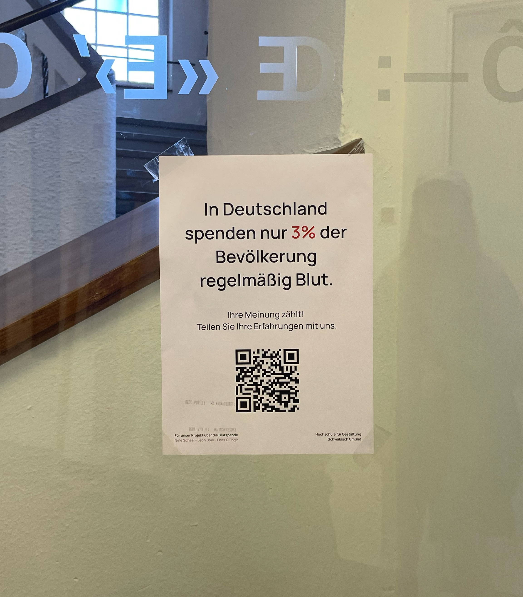
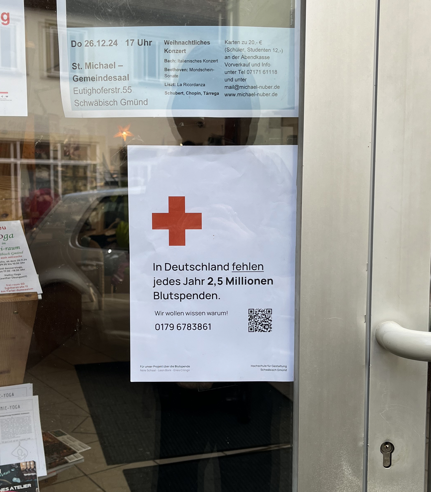
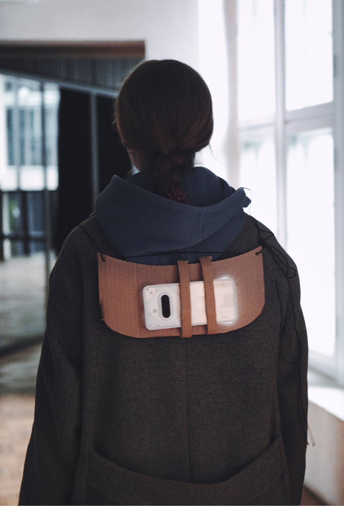
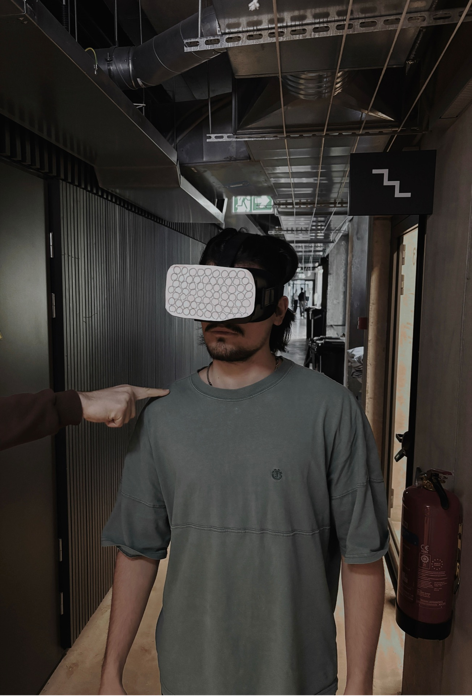
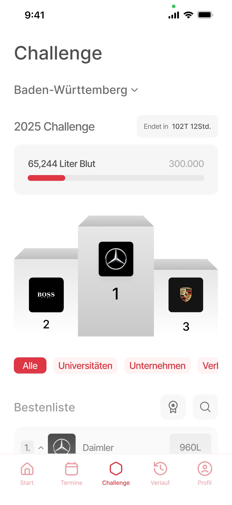

How Might We Encourage The Youth For Blood Donation?
2.5 million in blood donations are missing annually regularly.
In Germany, there is an annual shortage of 2.5 million blood donations – a deficit that exists because only 3% of the population donates regularly. The healthcare system relies heavily on older generations, with the average regular donor being 48 years old.
Young people in particular rarely or never participate in blood donations, as the topic is often not present in their daily lives.
Finding the Root Cause





The Reality Check
We wanted to hear directly from young people, not just our immediate circle. By putting up quick QR-code posters around our university campus and local spots in Schwäbisch Gmünd, we made it as easy as possible for them to jump straight into our survey.
While 76% express a strong willingness to donate, 54% are stopped by uncertainty about basic eligibility rules. The intention is there, but the knowledge is missing.
The core issue is an intention-action gap. High willingness to help simply never translates into a booked appointment.
Almost zero awareness of the existing Red Cross app confirmed our hypothesis: before we can optimize usability, we must fix visibility.


Framing the Action
With the systemic barriers exposed, we translated our research into three non-negotiable design challenges. These aren't just brainstorming prompts—they are the exact pillars our solution must deliver on to succeed.
How might we eliminate administrative friction to make donating the path of least resistance?
How might we transform an invisible clinical duty into an emotional, habit-building experience?
How might we proactively demystify eligibility rules so users never have to guess if they can help?


Connecting the Touchpoints
Mapping the complete journey helped us connect marketing touchpoints, digital flows, and on-site experiences. Each lane reveals how reminders, questionnaires, and follow-ups support donors from first awareness through post-donation engagement.

Final Designs

Tracks group-based donation goals and progress to make giving visible, social, and motivating.
Reduces friction in the donation flow so first-time users can move from interest to action quickly.
Turns confusing eligibility rules into a guided step, so uncertainty no longer blocks appointments.
Finds nearby slots with fewer clicks and better context, tailored to how young users plan their days.
Keeps upcoming appointments and reminders in one clear timeline to support consistent participation.
Makes past donations and impact legible, helping users build a repeatable habit over time.
Key Takeaways
We didn't start with the youth in mind. We just wanted to know why blood banks are constantly empty. But the deeper we dug, the more obvious the real gap became: an entire generation is willing to help, but the current system completely ignores how they live and communicate.
We don't need to convince young people to care. We just need to build a system that works for them.
That’s exactly what Pulse is for. By removing the constant guesswork around eligibility and stripping away the intimidating paperwork, we turned an outdated medical duty into a straightforward, shared habit.